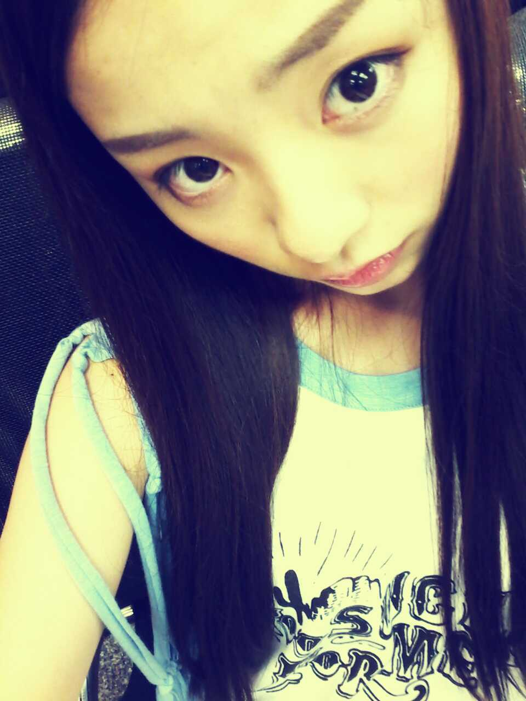

ほっほ〜い♪
ろってぃ-です。。)))

皆様こんにちわっ ☆)))
実は あの,あの...
大阪の全握の後
皆より早く 新大阪に向かい
その日 実家に帰りましたー
★☆★
バキューーン!!☆
新幹線までマミーとハピーが
車で迎えに来てくれた。
テンキュー♪!!
パピマミー><
で 久しぶりに3人で
晩ごはんを食べに行きました^^
まひろは
あっさりと うどんにした*´ε`*
小学校から同じだった子達が
働いていた。
みんな大人になってくんだ...*・ω・*
そして
日曜日は
お昼マミーとカラオケ♪
マミーは渋いハスキーな歌声で
いい感じです。
ほんで、 お腹すかせて
近くの中華料理屋に。。
おいしかたー★
小学校から同じだった子が
一生懸命働いてた^^
かっこよかった))
その後 マミーとバイバイして
１人でそのへんぶらぶらして
歩き過ぎて疲れて
家帰って寝よう(ω)と
思ったら
パピーがご飯行くぞぃ。
ゆーてそのまま
連れて行かれて
鳥肉なんぞ食べて
次の日 月曜日の朝に新幹線
乗って
お昼頃 東京着きました*・ε・*
とゆー流れであります´∀`
でも 久しぶりに色々
お話できて良かった*^ω^*
それに サスケ★と
久しぶりに会えて
めちゃくちゃ嬉しかった(⌒‐⌒)
いっぱい愛情そそいできたっ
=・ω・= ))
たっくさん
元気もらってきたっ ))
サスケ, まひろが東京に
行ってから
皮膚の病気になっちゃって
まひろが、
急にいなくなっちゃったせいで
ストレスかかえてたのかなって
思ってた。
心配だったけど、
土曜日の夜
久しぶりに顔合わせたら
すっごい笑顔で近づいてきて
何か言葉にできない気持ちだった´ω`
ごめんね (/- `。)
とありがとう^ω^
って伝えてきたっ*・ω・*
にしても,大阪やべーよ
(⌒‐⌒)
暑さはんぱないってばよ。
駅のホームで立ってる時の
暑さがマヂガチやべー。★☆★
(*・-・*)笑
よっしゃ^^
熱中症に負けてたまるかー!!
以上っ))
ろってぃ-♪でした〃ω〃